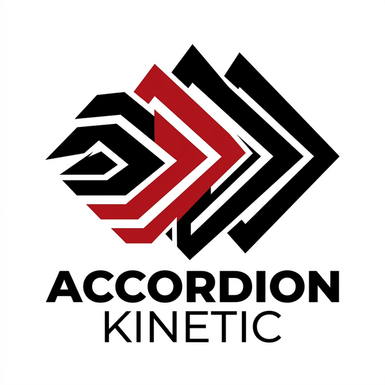

ACCORDION
SYSTEM READY — TILT TO INTERACT
Experience the intersection of physics and interface. This module utilizes the DeviceMotion API to respond to real-world orientation. Every tilt shifts the gravitational center of the UI.
Raw materials, exposed structures, and high-contrast logic. We don't hide the mechanics; we celebrate them through typography and spatial rhythm.
Accessing accelerometer data to determine spatial velocity. On HTTPS environments, tilt your phone to see the subtle parallax and weighting effects on the active panel.